Алгоритм нулевого порядка.
1. На вход блока сжатия в момент времени 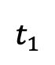 поступает отсчет 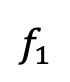. Значения и запоминаются в буфере памяти и одновременно заносятся на носитель информации, предназначенный для хранения результатов сжатия. По данным первого отсчет строится аппроксимирующий полином нулевого порядка:
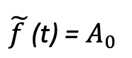, где 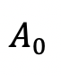 = .
2. На вход блока сжатия в момент времени 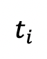 поступает очередной отсчет 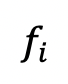. По формуле точного критерия верности 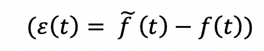 или относительного точечного критерия верности 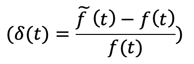 осуществляется расчет одного из точечных критериев 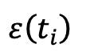 или 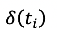. Далее проверяется выполнение требований 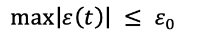 или 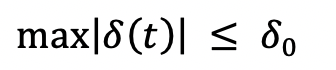, наложенных на соответстующий критерий равномерного приближения. Если условие или удовлетворяется, то повторяется выполнение п.2 для нового отсчета, в противном случае осуществляется переход к п.3.
3. Значения и принимаются за новый существенный отсчет, запоминаются в буфере памяти и одновременно заносятся на носитель информации, предназначенный для хранения результатов сжатия. По данным i-го отсчета строится аппроксимирующий полином нулевого порядка:
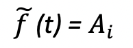, где 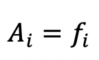.
Далее осуществляется переход к п. 2 настоящего алгоритма. Выполнение алгоритма заканчивается по окончании поступления данных на вход блока сжатия.
Алгоритм первого порядка с экстраполирующей процедурой аппроксимации
1.На вход блока сжатия в момент времени , поступает первый отсчет . Значения , и , запоминаются в буфере памяти.
2. На вход блока сжатия в момент времени 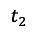 поступает второй отсчёт . Значения и 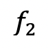 запоминаются в буфере памяти. По данным первого и второго отсчетов строится экстраполирующая прямая:
,
где коэффициент , 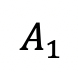, рассчитываются по следующим формулам:
)((t_2- t_1 ) ).png) ,
,  .
Значения и , сохраняются в буфере памяти. После этого значения ,
, заносятся на носитель информации, предназначенный для хранения результатов сжатия.
.
Значения и , сохраняются в буфере памяти. После этого значения ,
, заносятся на носитель информации, предназначенный для хранения результатов сжатия.
3. На вход блока сжатия в момент времени поступает очередной отсчёт .По формуле (4.12) проводится расчет , а по формулам (4.6)
или (4.9) осуществляется расчет одного из точечных критериев или .
Далее проверяется выполнение требований (4.11), наложенных на соответствующий критерий равномерного приближения. Если условие (4.11) удовлетворяется. то повторяется выполнение п. 3 для нового отсчета, в противном случае осуществляется переход к п. 4 .
4. Значения 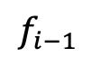 , 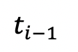 принимаются на новый существенный отсчет и запоминаются в буфере памяти. Далее по формуле (4.12) строится новая
экстраполирующая прямая, а коэффициенты А0,А1 уже рассчитываются
по-другому:
 ))((t_i- t_(i-1) ) ).png) ,
, - A_1* t_i.png) .
Значения и сохраняются в буфере памяти, после чего значения , заносятся на носитель информации, предназначенный для хранения результатов сжатия. Далеу осуществляется переход к по 3 настоящего алгорИтма.
Выполнение алгоритма заканчивается по окончании поступления данных
на вход блока сжатия.
.
Значения и сохраняются в буфере памяти, после чего значения , заносятся на носитель информации, предназначенный для хранения результатов сжатия. Далеу осуществляется переход к по 3 настоящего алгорИтма.
Выполнение алгоритма заканчивается по окончании поступления данных
на вход блока сжатия.
Алгоритм первого порядка с интерполирующей процедурой аппроксимации
1.На вход блока сжатия в момент времени поступает первый отсчет . Значения и запоминаются в буфере памяти.
2.На вход блока сжатия в момент времени поступает второй отсчет . Значения и запоминаются в буфере памяти.
3.На вход блока сжатия в момент времени поступает очередной отсчет . Значения и запоминаются в буфете памяти.
По точкам , и , строится интерполирующая прямая:
,
где коэффициенты , рассчитываются по формулам:
)((t_i- t_1 ) ).png) ; .
Далее последовательно для всех отсчетов ,;...;, по формулам или
; .
Далее последовательно для всех отсчетов ,;...;, по формулам или
 или
или  (4.11) рассчитываются значенияточечных критериев 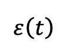 или 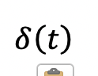.
Если для всех указанных отсчетов выполняются условие (4.11), наложенное на соответствующий
критерий равномерного приближения, выполнение п.3 повторяется для новых отсчетов. Если же хотя бы для одного отсчетов
условие (4.11) не выполняется, то осуществеляется преход к п.4.
(4.11) рассчитываются значенияточечных критериев 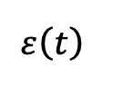 или 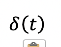.
Если для всех указанных отсчетов выполняются условие (4.11), наложенное на соответствующий
критерий равномерного приближения, выполнение п.3 повторяется для новых отсчетов. Если же хотя бы для одного отсчетов
условие (4.11) не выполняется, то осуществеляется преход к п.4.
4.Значение , принимаеются за существенный отсчет и запоминются в буфете памяти. Значения коэффициентов ,, подсчитанных в момент поступления этого отсчета, т.е. в предыдущий момент времени, вместе с величиной заносятся на носитель, предназначенный для хранения результатов сжатия. Примем (i-1)-й отсчет за первый и, повторяя все вышеприведенные рассуждения для вновь поступающих данных, осуществим переход к п.3. По окончанию поступления даннхы необходимо занести на итоговый носитель коэффициенты ,, рассчитанные на основе последнего отсчета, и значение - время поступления последнего существенного отсчета.